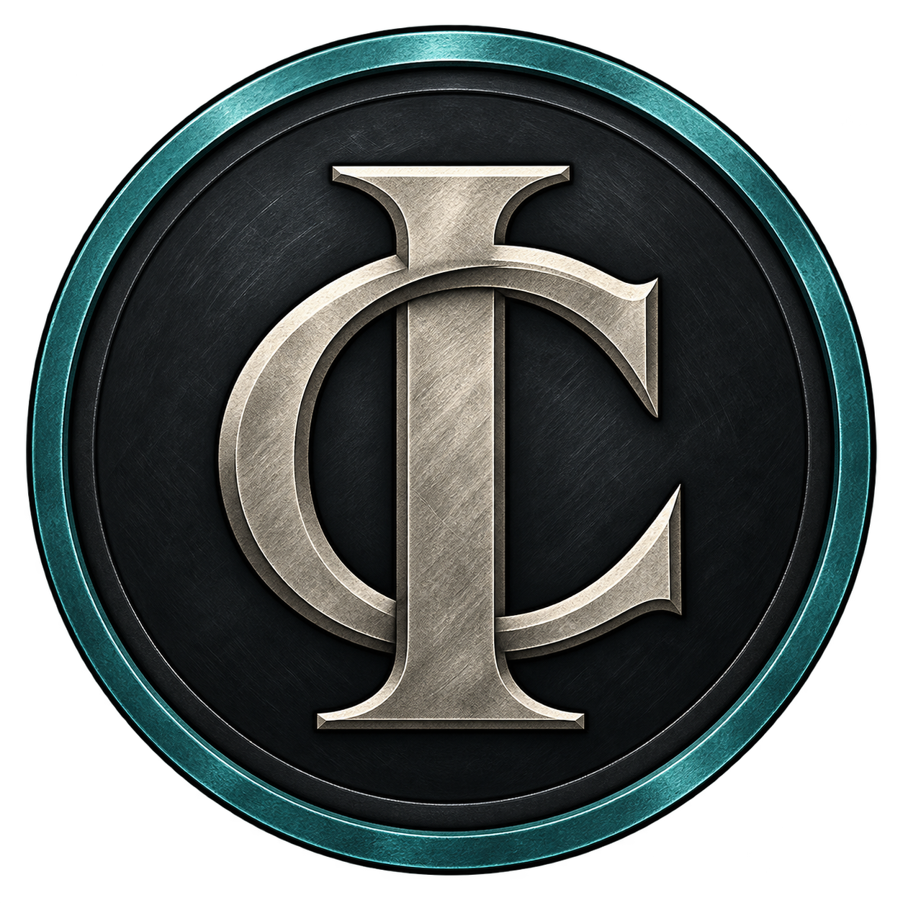

Moderation & automod
Manage warnings, timeouts, kicks, and bans with case history, reasons, and evidence. Configure automod rules and channel or role restrictions.
Your Discord. Better organized.
Keep your community moving.
Moderation, support tickets, and community tools for the people running a Discord server. Manage the bot through a web dashboard, with settings for your server’s channels, roles, and workflows.
Sign in with Discord, then choose “Add bot to a server.”

Available now
Choose and configure the modules your server needs. Features run according to their settings and the bot’s Discord permissions.
Manage warnings, timeouts, kicks, and bans with case history, reasons, and evidence. Configure automod rules and channel or role restrictions.
Publish ticket panels, organize private support channels, and manage assignments, priorities, tags, and notes. Use saved replies and retain transcripts.
Configure welcome and leave messages, starter roles, and verification tracking. Publish role buttons or menus with prerequisites and selection limits.
Reward participation with XP, leaderboards, and role rewards. Run polls and giveaways, collect suggestions, and highlight community posts with a starboard.
Create reusable responses with text, embeds, or interactive layouts. Set cooldowns, choose allowed channels and roles, and configure follow-up responses.
Let members create a room by joining a configured voice channel. Provide room owner controls, role restrictions, capacity settings, and automatic cleanup.
Manage bookings, schedule announcements and reminders, and configure supported content feeds. Review delivery records from the dashboard.
Manage server settings, review audit history, and control module activation. Use the policy inspector to understand saved channel and role restrictions.
Current development focus
Administration and recovery is the active development phase. The first policy inspector is shipped; the next work below is planned and is not yet available. Priorities may change as each part is tested.
Extend inspection and shared rule handling to polls, giveaways, starboard, and temporary voice rooms.
Make it clearer when a feature is off, needs configuration, or is missing permissions, with links to the relevant settings.
Add change previews, channel and role mapping, and conflict handling, with imported configurations kept inactive until reviewed.
Explore applying a reviewed channel and role layout to an existing server. Template formats and the first implementation are still being worked out.
Feature and development status reviewed .
Get started
Use the account that manages your server. The install flow starts with a secure Discord sign-in.
Choose “Add bot to a server” in the dashboard, select your server, and review the permissions requested by Discord.
Return to the dashboard, choose the server, and set up the channels, roles, and features you want to activate.